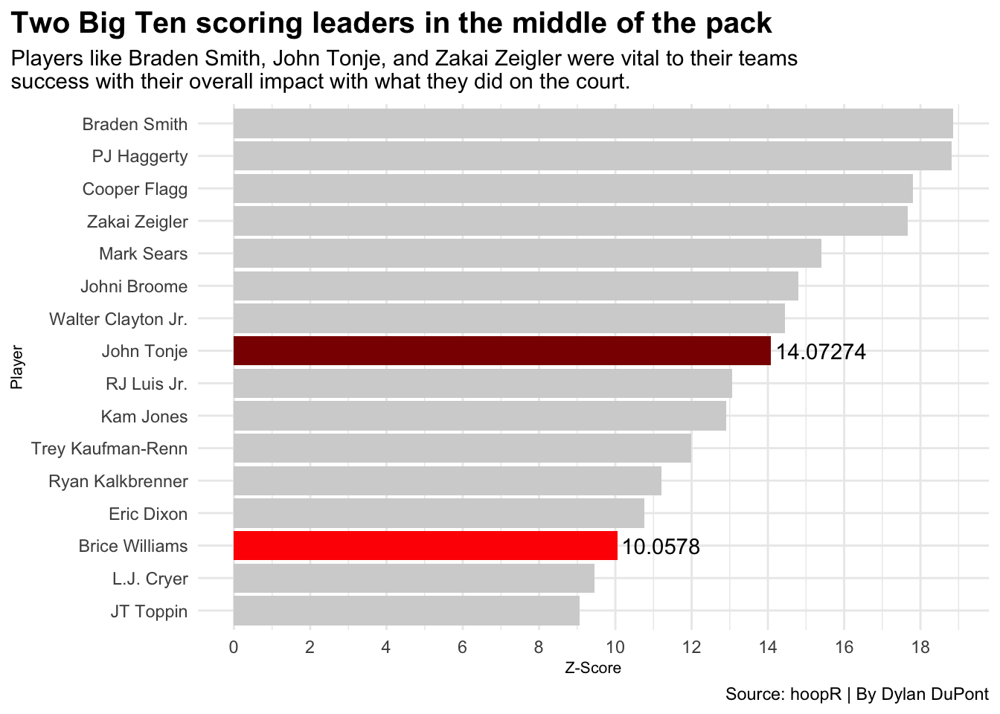

Code
library(tidyverse)
library(hoopR)
library(ggrepel)
library(ggalt)
library(ggtext)
cbbplayers <- load_mbb_player_box(2025)
totals <- cbbplayers |>
group_by(athlete_display_name, team_short_display_name, ) |>
summarise(
totalmins = sum(minutes, na.rm=TRUE),
totalpts = sum(points, na.rm=TRUE),
totaloffrebs = sum(offensive_rebounds, na.rm=TRUE),
totaldefrebs = sum(defensive_rebounds, na.rm=TRUE),
totalrebs = sum(rebounds, na.rm=TRUE),
totalasts = sum(assists, na.rm=TRUE),
totalstls = sum(steals, na.rm=TRUE),
totalblks = sum(blocks, na.rm=TRUE),
totaltos = sum(turnovers, na.rm=TRUE),
totalfouls = sum(fouls, na.rm=TRUE),
totalfgsmade = sum(field_goals_made, na.rm=TRUE),
totalfgsatt = sum(field_goals_attempted, na.rm=TRUE),
total3ptsmade = sum(three_point_field_goals_made, na.rm=TRUE),
total3ptsatt = sum(three_point_field_goals_attempted, na.rm=TRUE),
totalftsmade = sum(free_throws_made, na.rm=TRUE),
totalftsatt = sum(free_throws_attempted, na.rm=TRUE)
) |>
ungroup()
total_zscores <- totals |>
filter(totalmins > 50) |>
mutate(
ptsZscore = as.numeric(scale(totalpts, center = TRUE, scale = TRUE)),
rbZscore = as.numeric(scale(totalrebs, center = TRUE, scale = TRUE)),
mpZscore = as.numeric(scale(totalmins, center = TRUE, scale = TRUE)),
astZscore = as.numeric(scale(totalasts, center = TRUE, scale = TRUE)),
ftsmadeZscore = as.numeric(scale(totalftsmade, center = TRUE, scale = TRUE)),
stlZscore = as.numeric(scale(totalstls, center = TRUE, scale = TRUE)),
Score = ptsZscore + rbZscore + mpZscore + astZscore + ftsmadeZscore + stlZscore
) |>
arrange(desc(Score))
allamer <- c("Brice Williams", "Cooper Flagg", "Johni Broome", "Walter Clayton Jr.", "JT Toppin", "Braden Smith", "John Tonje", "Ryan Kalkbrenner", "Mark Sears", "Kam Jones", "PJ Haggerty", "Eric Dixon", "L.J. Cryer", "RJ Luis Jr.", "Trey Kaufman-Renn", "Zakai Zeigler")
allamericans <- total_zscores |>
filter(athlete_display_name %in% allamer) |>
filter(totalmins > 50)
bricewilliams <- allamericans |>
filter(athlete_display_name == "Brice Williams")
johntonje <- allamericans |>
filter(athlete_display_name == "John Tonje")
ggplot() +
geom_bar(data=allamericans, aes(x=reorder(athlete_display_name, Score), weight=Score), fill="lightgrey") +
geom_bar(data=bricewilliams, aes(x=reorder(athlete_display_name, Score), weight=Score), fill="red") +
geom_bar(data=johntonje, aes(x=reorder(athlete_display_name, Score), weight=Score), fill="darkred") +
geom_text(
aes(x="Brice Williams", y=11.2, label="10.0578")
) +
geom_text(
aes(x="John Tonje", y=15.4, label="14.07274")
) +
scale_y_continuous(breaks=c(0,2,4,6,8,10,12,14,16,18,20)) +
labs(
x="Player",
y="Z-Score",
title="Two Big Ten scoring leaders in the middle of the pack",
subtitle="Players like Braden Smith, John Tonje, and Zakai Zeigler were vital to their teams \nsuccess with their overall impact with what they did on the court.",
caption="Source: hoopR | By Dylan DuPont"
) +
theme_minimal() +
theme(
plot.title = element_text(size = 15, face = "bold"),
axis.title = element_text(size = 8),
plot.title.position = "plot"
) +
coord_flip() 